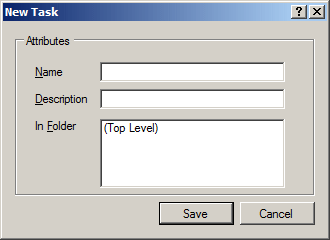
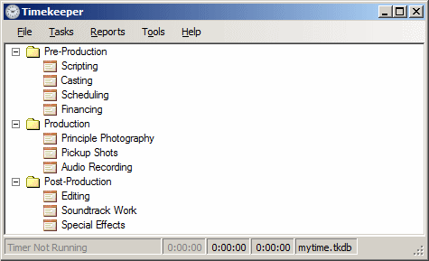

Timekeeper allows you to define one or more tasks for time tracking. The tasks you track are entirely up to you. At it's most basic level, you could create just one task, call it "Working" and log all your time against it.
However, it's a bit more interesting to keep track of specific tasks, much in the same way you would keep track of the money you spend. You might define tasks called, "Meetings", "Development", "Support", "Errands", "Personal Time", and so on. What you define depends heavily on your role.
If you work on the same tasks repeatedly but across different projects, Timekeeper allows you to create a second dimension through project tracking.
Creating new tasks is easy. Use the menu function or right-click anywhere on the Task pane and select .
Give the task a name and an optional description. You can associate it with a folder (if any folders have been defined) or leave it at the top level. Click Save and you're done. You can now log time against this new task.
Timekeeper supports Task folders for grouping related tasks. For example, let's say you're a video editor and you want to have tasks for pre-production, production, and post-production. Create one task folder for each, then add individual tasks, like so:

You can move tasks to a different folder by right-clicking a task, selecting Edit, and then changing its parent. You may also drag tasks to a new folder.